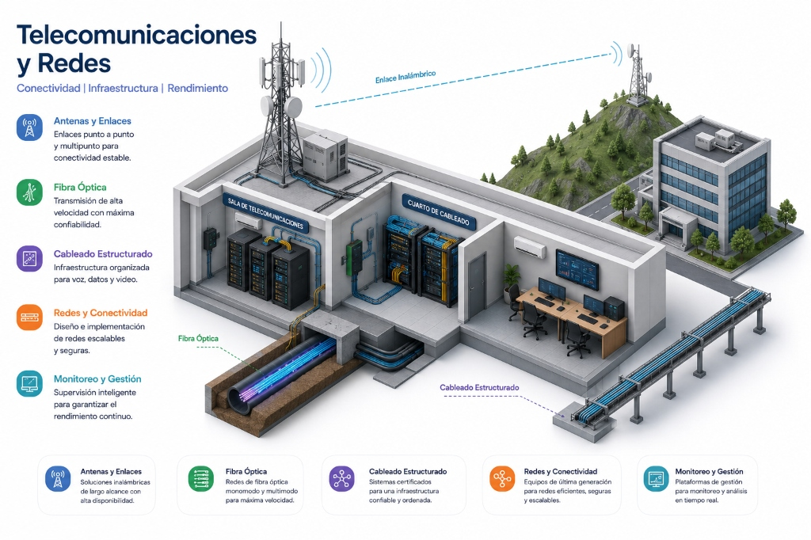

<!--
  ╔══════════════════════════════════════════════════════════════════╗
  ║  TECNOVOA — Telecomunicaciones y Redes                          ║
  ║  Versión: WordPress Embed (sin navbar, sin footer, sin breadcrumb)║
  ║  Pegar en: Bloque "HTML Personalizado" de WordPress             ║
  ╚══════════════════════════════════════════════════════════════════╝
-->

<!--
  =============================================================================
  GUÍA PARA OPTIMIZAR YOAST SEO Y GOOGLE SITE KIT
  =============================================================================
  Para obtener el mejor rendimiento en Google Search (Site Kit) y Yoast SEO, 
  copia esta información en el panel de WordPress:

  1. Frase Clave Objetivo:
     Infraestructura de Telecomunicaciones y Redes

  2. Título SEO:
     Infraestructura de Telecomunicaciones y Redes Empresariales | TECNOVOA

  3. Slug:
     infraestructura-telecomunicaciones-redes

  4. Meta Descripción:
     Conecta a tu empresa con nuestra infraestructura de telecomunicaciones y redes. Soluciones de conectividad segura, WiFi corporativo y networking avanzado.

  (NOTA: La frase clave ya ha sido insertada de manera semántica en las etiquetas 
  H1, H2 y en la introducción del texto de esta página, optimizando el SEO técnico).
  =============================================================================
-->

<!-- Google Fonts -->
<link rel="preconnect" href="https://fonts.googleapis.com">
<link rel="preconnect" href="https://fonts.gstatic.com" crossorigin>
<link href="https://fonts.googleapis.com/css2?family=Inter:wght@300;400;500;600;700;800;900&display=swap" rel="stylesheet">

<style>
/* ─────────────────────────────────────────────────────────────────
   SCOPE: Todo el CSS está limitado al wrapper .tv-av-page
   para no interferir con el tema de WordPress.
───────────────────────────────────────────────────────────────── */

.tv-av-page *,
.tv-av-page *::before,
.tv-av-page *::after {
  box-sizing: border-box;
  margin: 0;
  padding: 0;
}

.tv-av-page {
  --bg:        #080d1a;
  --bg-2:      #0c1224;
  --bg-3:      #111829;
  --surface:   rgba(255,255,255,0.02);
  --surface-h: rgba(255,255,255,0.06);
  --border:    rgba(255,255,255,0.05);
  --border-h:  rgba(42,115,255,0.4);
  --text:      #f0f4ff;
  --text-2:    #8b9ab5;
  --text-3:    #5a6a84;
  --accent:    #2a73ff;
  --accent-2:  #00c8ff;
  --accent-g:  linear-gradient(135deg, #2a73ff 0%, #00c8ff 100%);
  --cyan:      #00c8ff;
  --orange:    #00c8ff;
  --orange-g:  linear-gradient(135deg, #00c8ff 0%, #2a73ff 100%);
  --radius-sm: 8px;
  --radius-md: 14px;
  --radius-lg: 22px;

  font-family: 'Inter', -apple-system, BlinkMacSystemFont, 'Segoe UI', sans-serif;
  background: var(--bg);
  color: var(--text);
  line-height: 1.65;
  overflow-x: hidden;

  /* Margen negativo para anular el padding del contenedor de WP */
  width: 100vw;
  margin-left: calc(-50vw + 50%);
}

.tv-av-page img { max-width: 100%; display: block; }
.tv-av-page a   { color: inherit; text-decoration: none; }
.tv-av-page ul,
.tv-av-page ol  { list-style: none; }

.tv-av-page .container {
  width: 100%;
  max-width: 1200px;
  margin: 0 auto;
  padding: 0 24px;
}

/* ─── HERO ─────────────────────────────────────────────── */
.tv-av-page #redes-hero {
  position: relative;
  padding: 72px 0 100px;
  overflow: hidden;
}

.tv-av-page .hero-bg {
  position: absolute;
  inset: 0;
  pointer-events: none;
  z-index: 0;
}

.tv-av-page .hero-stock-img {
  position: absolute;
  inset: 0;
  background-image: url('https://images.unsplash.com/photo-1558494949-ef010cbdcc31?w=1600&auto=format&fit=crop&q=60');
  background-size: cover;
  background-position: center;
  opacity: 0.07;
  mix-blend-mode: luminosity;
}

.tv-av-page .hero-bg-grid {
  position: absolute;
  inset: 0;
  background-image:
    linear-gradient(rgba(251,146,60,0.04) 1px, transparent 1px),
    linear-gradient(90deg, rgba(251,146,60,0.04) 1px, transparent 1px);
  background-size: 60px 60px;
  mask-image: radial-gradient(ellipse 80% 70% at 50% 50%, black 30%, transparent 100%);
}

.tv-av-page .hero-blob {
  position: absolute;
  border-radius: 999px;
  filter: blur(90px);
  opacity: 0.12;
}

.tv-av-page .hero-blob-1 { width:550px; height:550px; background:#fb923c; top:-120px; left:-80px; }
.tv-av-page .hero-blob-2 { width:350px; height:350px; background:#2a73ff; bottom:0; right:-60px; }

.tv-av-page .hero-inner {
  position: relative;
  z-index: 1;
  display: grid;
  grid-template-columns: 1.3fr 0.7fr;
  gap: 48px;
  align-items: center;
}

.tv-av-page .hero-title {
  font-size: clamp(34px, 4vw, 58px);
  font-weight: 900;
  line-height: 1.06;
  letter-spacing: -0.035em;
  margin-bottom: 22px;
  overflow: visible;
  word-break: break-word;
}

/* Etiqueta del panel de problemas */
.tv-av-page .hero-visual-label {
  font-size: 11px;
  font-weight: 700;
  letter-spacing: 0.15em;
  text-transform: uppercase;
  color: var(--orange);
  margin-bottom: 12px;
  padding-bottom: 10px;
  border-bottom: 1px solid rgba(251,146,60,0.2);
}

.tv-av-page .grad-orange {
  background: var(--orange-g);
  -webkit-background-clip: text;
  -webkit-text-fill-color: transparent;
  background-clip: text;
}

.tv-av-page .grad-blue {
  background: var(--accent-g);
  -webkit-background-clip: text;
  -webkit-text-fill-color: transparent;
  background-clip: text;
}

.tv-av-page .hero-lead {
  font-size: 16px;
  color: var(--text-2);
  line-height: 1.7;
  margin-bottom: 36px;
  max-width: 540px;
}

.tv-av-page .hero-actions {
  display: flex;
  gap: 14px;
  flex-wrap: wrap;
  margin-bottom: 48px;
}

.tv-av-page .btn-primary {
  display: inline-flex;
  align-items: center;
  gap: 10px;
  padding: 14px 28px;
  background: var(--accent-g);
  color: #fff;
  font-size: 15px;
  font-weight: 700;
  border-radius: 99px;
  border: none;
  cursor: pointer;
  transition: transform 0.2s, box-shadow 0.2s;
  box-shadow: 0 0 28px rgba(42,115,255,0.4);
  text-decoration: none;
}

.tv-av-page .btn-primary:hover { transform: translateY(-2px); box-shadow: 0 8px 36px rgba(42,115,255,0.5); }

.tv-av-page .btn-secondary {
  display: inline-flex;
  align-items: center;
  gap: 10px;
  padding: 13px 26px;
  background: transparent;
  color: var(--text);
  font-size: 15px;
  font-weight: 600;
  border-radius: 99px;
  border: 1px solid var(--border);
  cursor: pointer;
  transition: background 0.2s, border-color 0.2s, transform 0.2s;
  text-decoration: none;
}

.tv-av-page .btn-secondary:hover { background: var(--surface-h); border-color: var(--border-h); transform: translateY(-2px); }

/* Hero KPIs */
.tv-av-page .hero-kpis {
  display: grid;
  grid-template-columns: repeat(3, 1fr);
  gap: 0;
  border: 1px solid var(--border);
  border-radius: var(--radius-lg);
  overflow: hidden;
}

.tv-av-page .hero-kpi {
  padding: 22px 16px;
  text-align: center;
  border-right: 1px solid var(--border);
  background: var(--surface);
}

.tv-av-page .hero-kpi:last-child { border-right: 0; }

.tv-av-page .hero-kpi-val {
  font-size: 28px;
  font-weight: 900;
  letter-spacing: -0.05em;
  background: var(--orange-g);
  -webkit-background-clip: text;
  -webkit-text-fill-color: transparent;
  background-clip: text;
  line-height: 1;
  margin-bottom: 6px;
}

.tv-av-page .hero-kpi-label { font-size: 11px; color: var(--text-2); line-height: 1.4; }

/* Hero visual derecho */
.tv-av-page .hero-visual {
  display: flex;
  flex-direction: column;
  gap: 12px;
}

.tv-av-page .problem-card {
  background: var(--surface);
  border: 1px solid var(--border);
  border-radius: var(--radius-lg);
  padding: 16px 18px;
  display: flex;
  align-items: flex-start;
  gap: 14px;
  transition: border-color 0.3s, background 0.3s;
  animation: tv-slideIn 0.5s ease backwards;
}

.tv-av-page .problem-card:hover { border-color: rgba(251,146,60,0.35); background: var(--surface-h); }
.tv-av-page .problem-card:nth-child(1) { animation-delay: 0.1s; }
.tv-av-page .problem-card:nth-child(2) { animation-delay: 0.2s; }
.tv-av-page .problem-card:nth-child(3) { animation-delay: 0.3s; }
.tv-av-page .problem-card:nth-child(4) { animation-delay: 0.4s; }

@keyframes tv-slideIn {
  from { opacity: 0; transform: translateX(24px); }
  to   { opacity: 1; transform: translateX(0); }
}

.tv-av-page .problem-icon {
  width: 36px; height: 36px;
  border-radius: var(--radius-sm);
  display: grid;
  place-items: center;
  font-size: 16px;
  flex-shrink: 0;
  background: rgba(251,146,60,0.1);
}

.tv-av-page .problem-card strong {
  display: block;
  font-size: 13px;
  font-weight: 700;
  color: var(--text);
  margin-bottom: 2px;
}

.tv-av-page .problem-card span {
  font-size: 12px;
  color: var(--text-2);
  line-height: 1.4;
}

/* ─── SECCIÓN GENÉRICA ─────────────────────────────────── */
.tv-av-page .section { padding: 90px 0; }
.tv-av-page .section-alt { background: var(--bg-2); }

.tv-av-page .section-tag {
  display: inline-block;
  padding: 5px 14px;
  background: rgba(251,146,60,0.1);
  border: 1px solid rgba(251,146,60,0.25);
  border-radius: 99px;
  font-size: 11px;
  font-weight: 700;
  letter-spacing: 0.18em;
  text-transform: uppercase;
  color: var(--orange);
  margin-bottom: 16px;
}

.tv-av-page .section-tag.blue {
  background: rgba(42,115,255,0.1);
  border-color: rgba(42,115,255,0.25);
  color: var(--cyan);
}

.tv-av-page .section-header {
  text-align: center;
  margin-bottom: 56px;
}

.tv-av-page .section-title {
  font-size: clamp(26px, 3.2vw, 40px);
  font-weight: 900;
  letter-spacing: -0.04em;
  line-height: 1.1;
  margin-bottom: 14px;
  color: var(--text);
}

.tv-av-page .section-sub {
  font-size: 16px;
  color: var(--text-2);
  max-width: 600px;
  margin: 0 auto;
  line-height: 1.7;
}

/* ─── PORTAFOLIO GRID ──────────────────────────────────── */
.tv-av-page .portfolio-grid {
  display: grid;
  grid-template-columns: repeat(auto-fill, minmax(340px, 1fr));
  gap: 20px;
}

.tv-av-page .portfolio-card {
  background: var(--surface);
  border: 1px solid var(--border);
  border-radius: var(--radius-lg);
  padding: 28px;
  display: flex;
  flex-direction: column;
  gap: 14px;
  transition: border-color 0.3s, background 0.3s, transform 0.3s, box-shadow 0.3s;
  position: relative;
  overflow: hidden;
}

.tv-av-page .portfolio-card::before {
  content: '';
  position: absolute;
  top: 0; left: 0; right: 0;
  height: 2px;
  background: var(--orange-g);
  opacity: 0;
  transition: opacity 0.3s;
}

.tv-av-page .portfolio-card:hover {
  border-color: rgba(251,146,60,0.3);
  background: var(--surface-h);
  transform: translateY(-4px);
  box-shadow: 0 20px 50px rgba(0,0,0,0.4);
}

.tv-av-page .portfolio-card:hover::before { opacity: 1; }

.tv-av-page .portfolio-header {
  display: flex;
  align-items: center;
  gap: 14px;
}

.tv-av-page .portfolio-icon {
  width: 48px; height: 48px;
  border-radius: var(--radius-md);
  display: grid;
  place-items: center;
  font-size: 22px;
  flex-shrink: 0;
  background: rgba(251,146,60,0.1);
}

.tv-av-page .portfolio-title {
  font-size: 17px;
  font-weight: 800;
  letter-spacing: -0.02em;
  line-height: 1.2;
  color: var(--text);
}

.tv-av-page .portfolio-cat {
  font-size: 10px;
  font-weight: 700;
  letter-spacing: 0.12em;
  text-transform: uppercase;
  color: var(--orange);
  margin-top: 2px;
}

.tv-av-page .portfolio-desc {
  font-size: 14px;
  color: var(--text-2);
  line-height: 1.65;
}

.tv-av-page .product-list {
  display: flex;
  flex-direction: column;
  gap: 9px;
  padding-top: 14px;
  border-top: 1px solid var(--border);
}

.tv-av-page .product-item {
  display: flex;
  align-items: flex-start;
  gap: 10px;
}

.tv-av-page .product-dot {
  width: 6px; height: 6px;
  background: var(--orange);
  border-radius: 99px;
  flex-shrink: 0;
  margin-top: 7px;
}

.tv-av-page .product-item-text {
  font-size: 13px;
  line-height: 1.5;
  color: var(--text-2);
}

.tv-av-page .product-item-text strong { color: var(--text); font-weight: 700; }

.tv-av-page .brand-tags {
  display: flex;
  flex-wrap: wrap;
  gap: 7px;
  margin-top: auto;
  padding-top: 14px;
  border-top: 1px solid var(--border);
}

.tv-av-page .brand-tag {
  padding: 4px 10px;
  background: rgba(255,255,255,0.04);
  border: 1px solid var(--border);
  border-radius: 99px;
  font-size: 11px;
  font-weight: 600;
  color: var(--text-2);
  white-space: nowrap;
  transition: background 0.2s, border-color 0.2s, color 0.2s;
}

.tv-av-page .portfolio-card:hover .brand-tag {
  background: rgba(251,146,60,0.07);
  border-color: rgba(251,146,60,0.2);
  color: var(--orange);
}

/* ─── PROCESO ──────────────────────────────────────────── */
.tv-av-page .process-grid {
  display: grid;
  grid-template-columns: repeat(auto-fill, minmax(220px, 1fr));
  gap: 16px;
}

.tv-av-page .process-step {
  background: var(--surface);
  border: 1px solid var(--border);
  border-radius: var(--radius-lg);
  padding: 28px 22px;
  text-align: center;
  transition: border-color 0.3s, transform 0.3s;
}

.tv-av-page .process-step:hover { border-color: rgba(251,146,60,0.3); transform: translateY(-4px); }

.tv-av-page .process-number {
  font-size: 11px;
  font-weight: 800;
  letter-spacing: 0.18em;
  text-transform: uppercase;
  color: var(--orange);
  margin-bottom: 14px;
}

.tv-av-page .process-icon { font-size: 28px; margin-bottom: 12px; display: block; }

.tv-av-page .process-step-title {
  font-size: 15px;
  font-weight: 800;
  letter-spacing: -0.02em;
  margin-bottom: 10px;
  color: var(--text);
}

.tv-av-page .process-desc { font-size: 13px; color: var(--text-2); line-height: 1.6; }

/* ─── PARTNERS ─────────────────────────────────────────── */
.tv-av-page .partners-grid {
  display: grid;
  grid-template-columns: repeat(auto-fill, minmax(260px, 1fr));
  gap: 16px;
}

.tv-av-page .partner-card {
  background: var(--surface);
  border: 1px solid var(--border);
  border-radius: var(--radius-lg);
  padding: 22px;
  display: flex;
  align-items: center;
  gap: 16px;
  transition: border-color 0.3s, background 0.3s, transform 0.3s;
}

.tv-av-page .partner-card:hover {
  border-color: rgba(251,146,60,0.3);
  background: var(--surface-h);
  transform: translateY(-3px);
}

.tv-av-page .partner-card.top-partner {
  border-color: rgba(251,146,60,0.3);
  background: rgba(251,146,60,0.05);
}

.tv-av-page .partner-emoji { font-size: 28px; flex-shrink: 0; }

.tv-av-page .partner-info-name {
  font-size: 15px;
  font-weight: 800;
  margin-bottom: 4px;
  color: var(--text);
}

.tv-av-page .partner-info-desc { font-size: 12px; color: var(--text-2); line-height: 1.5; }

.tv-av-page .partner-badge {
  display: inline-block;
  padding: 3px 8px;
  background: rgba(251,146,60,0.15);
  border: 1px solid rgba(251,146,60,0.3);
  border-radius: 99px;
  font-size: 10px;
  font-weight: 700;
  letter-spacing: 0.1em;
  text-transform: uppercase;
  color: var(--orange);
  margin-top: 6px;
}

/* ─── SERVICIOS ────────────────────────────────────────── */
.tv-av-page .services-list {
  display: grid;
  grid-template-columns: 1fr 1fr;
  gap: 16px;
}

.tv-av-page .service-item {
  background: var(--surface);
  border: 1px solid var(--border);
  border-radius: var(--radius-lg);
  padding: 24px;
  display: flex;
  align-items: flex-start;
  gap: 16px;
  transition: border-color 0.3s, background 0.3s, transform 0.3s;
}

.tv-av-page .service-item:hover {
  border-color: rgba(42,115,255,0.3);
  background: var(--surface-h);
  transform: translateY(-3px);
}

.tv-av-page .service-item-icon {
  width: 44px; height: 44px;
  border-radius: var(--radius-md);
  background: rgba(42,115,255,0.1);
  display: grid;
  place-items: center;
  font-size: 20px;
  flex-shrink: 0;
}

.tv-av-page .service-item-title {
  font-size: 14px;
  font-weight: 800;
  letter-spacing: -0.01em;
  margin-bottom: 6px;
  color: var(--text);
}

.tv-av-page .service-item-desc { font-size: 13px; color: var(--text-2); line-height: 1.6; }

/* ─── UNIDADES RELACIONADAS ────────────────────────────── */
.tv-av-page .related-grid {
  display: grid;
  grid-template-columns: repeat(3, 1fr);
  gap: 16px;
}

.tv-av-page .related-card {
  background: var(--surface);
  border: 1px solid var(--border);
  border-radius: var(--radius-lg);
  padding: 24px;
  display: flex;
  flex-direction: column;
  gap: 12px;
  transition: border-color 0.3s, background 0.3s, transform 0.3s;
  text-decoration: none;
}

.tv-av-page .related-card:hover {
  border-color: rgba(42,115,255,0.35);
  background: var(--surface-h);
  transform: translateY(-4px);
}

.tv-av-page .related-card-icon {
  font-size: 26px;
  width: 50px; height: 50px;
  background: rgba(42,115,255,0.1);
  border-radius: var(--radius-md);
  display: grid;
  place-items: center;
}

.tv-av-page .related-card-title {
  font-size: 15px;
  font-weight: 800;
  letter-spacing: -0.02em;
  color: var(--text);
}

.tv-av-page .related-card-desc { font-size: 13px; color: var(--text-2); line-height: 1.55; }

.tv-av-page .related-card-link {
  font-size: 13px;
  font-weight: 700;
  color: var(--cyan);
  display: flex;
  align-items: center;
  gap: 5px;
  margin-top: auto;
}

/* ─── CTA FINAL ────────────────────────────────────────── */
.tv-av-page #redes-cta-final {
  padding: 100px 0;
  position: relative;
  overflow: hidden;
  background: var(--bg-2);
}

.tv-av-page #redes-cta-final::before {
  content: '';
  position: absolute;
  width: 700px; height: 700px;
  border-radius: 999px;
  background: radial-gradient(circle, rgba(251,146,60,0.1) 0%, transparent 70%);
  top: 50%; left: 50%;
  transform: translate(-50%,-50%);
  pointer-events: none;
}

.tv-av-page .cta-inner {
  position: relative;
  z-index: 1;
  text-align: center;
  max-width: 700px;
  margin: 0 auto;
}

.tv-av-page .cta-title {
  font-size: clamp(26px, 3.5vw, 42px);
  font-weight: 900;
  letter-spacing: -0.04em;
  line-height: 1.1;
  margin-bottom: 18px;
  color: var(--text);
}

.tv-av-page .cta-sub {
  font-size: 16px;
  color: var(--text-2);
  line-height: 1.7;
  margin-bottom: 36px;
}

.tv-av-page .cta-actions {
  display: flex;
  gap: 14px;
  justify-content: center;
  flex-wrap: wrap;
}

.tv-av-page .cta-contact-strip {
  display: flex;
  gap: 24px;
  justify-content: center;
  flex-wrap: wrap;
  margin-top: 36px;
  padding-top: 36px;
  border-top: 1px solid var(--border);
}

.tv-av-page .cta-contact-item {
  display: flex;
  align-items: center;
  gap: 10px;
  font-size: 14px;
  color: var(--text-2);
  transition: color 0.2s;
  text-decoration: none;
}

.tv-av-page .cta-contact-item:hover { color: var(--text); }
.tv-av-page .cta-contact-item .icon { font-size: 18px; }

/* ─── SCROLL ANIMATIONS ────────────────────────────────── */
.tv-av-page .fade-in {
  opacity: 0;
  transform: translateY(24px);
  transition: opacity 0.65s ease, transform 0.65s ease;
}

.tv-av-page .fade-in.visible { opacity: 1; transform: translateY(0); }
.tv-av-page .fade-delay-1 { transition-delay: 0.08s; }
.tv-av-page .fade-delay-2 { transition-delay: 0.16s; }
.tv-av-page .fade-delay-3 { transition-delay: 0.24s; }
.tv-av-page .fade-delay-4 { transition-delay: 0.32s; }

/* ─── RESPONSIVE ───────────────────────────────────────── */
@media (max-width: 1024px) {
  .tv-av-page .hero-inner { grid-template-columns: 1fr; gap: 40px; }
  .tv-av-page .hero-visual { display: none; }
  .tv-av-page .related-grid { grid-template-columns: 1fr 1fr; }
}

@media (max-width: 768px) {
  .tv-av-page .portfolio-grid { grid-template-columns: 1fr; }
  .tv-av-page .services-list { grid-template-columns: 1fr; }
  .tv-av-page .related-grid { grid-template-columns: 1fr; }
  .tv-av-page .hero-kpis { grid-template-columns: 1fr; border-radius: var(--radius-md); }
  .tv-av-page .hero-kpi { border-right: 0; border-bottom: 1px solid var(--border); }
  .tv-av-page .hero-kpi:last-child { border-bottom: 0; }
  .tv-av-page .process-grid { grid-template-columns: 1fr 1fr; }
  .tv-av-page .partners-grid { grid-template-columns: 1fr; }
  .tv-av-page .section { padding: 70px 0; }
  .tv-av-page #redes-hero { padding: 48px 0 80px; }
  .tv-av-page .hero-title { font-size: 28px; }
}

@media (max-width: 480px) {
  .tv-av-page .process-grid { grid-template-columns: 1fr; }
  .tv-av-page .hero-actions { flex-direction: column; }
  .tv-av-page .btn-primary,
  .tv-av-page .btn-secondary { width: 100%; justify-content: center; }
  .tv-av-page .cta-actions { flex-direction: column; align-items: center; }
  .tv-av-page .portfolio-card[style*="span 2"] { grid-column: 1 !important; }
}

/* ─── CAROUSEL DE MARCAS ───────────────────────────────── */
.tv-av-page .brand-carousel-section {
  padding: 30px 0;
  background: var(--bg-2);
  border-top: 1px solid var(--border);
  border-bottom: 1px solid var(--border);
  overflow: hidden;
  position: relative;
  z-index: 10;
}

.tv-av-page .brand-carousel-wrapper {
  display: flex;
  overflow: hidden;
  user-select: none;
  mask-image: linear-gradient(to right, transparent, black 15%, black 85%, transparent);
  -webkit-mask-image: linear-gradient(to right, transparent, black 15%, black 85%, transparent);
}

.tv-av-page .brand-carousel-track {
  display: flex;
  gap: 80px;
  width: max-content;
  animation: tv-carousel-scroll 25s linear infinite;
}

.tv-av-page .brand-carousel-track:hover {
  animation-play-state: paused;
}

.tv-av-page .brand-carousel-item {
  font-size: 18px;
  font-weight: 700;
  color: var(--text-2);
  letter-spacing: 1px;
  transition: color 0.3s, transform 0.3s;
  cursor: pointer;
  display: flex;
  align-items: center;
  justify-content: center;
}

.tv-av-page .brand-carousel-item:hover {
  color: var(--orange);
  transform: scale(1.08);
}

@keyframes tv-carousel-scroll {
  0% { transform: translateX(0); }
  100% { transform: translateX(calc(-50% - 40px)); }
═════════════════════════════════════════════════════════════ -->
<div class="tv-av-page" id="redes-top">


  <!-- ══════════════════════════════════════════════════════ -->
  <!--  HERO SECTION                                          -->
  <!-- ══════════════════════════════════════════════════════ -->
  <section id="redes-hero" aria-labelledby="redes-hero-title">
    <div class="hero-bg" aria-hidden="true">
      <div class="hero-stock-img"></div>
      <div class="hero-bg-grid"></div>
      <div class="hero-blob hero-blob-1"></div>
      <div class="hero-blob hero-blob-2"></div>
    </div>

    <div class="container">
      <div class="hero-inner">

        <!-- Copy izquierdo -->
        <div>


          <!-- H1 con keyword SEO -->
          <h1 class="hero-title" id="redes-hero-title">
            Redes empresariales<br>
            <span class="grad-orange">confiables en Chile</span><br>
            para infraestructura crítica
          </h1>

          <p class="hero-lead">
            Diseñamos e implementamos redes empresariales de alto rendimiento para empresas en Chile. Además, integramos soluciones WiFi, fibra óptica y cableado estructurado que eliminan las caídas de conexión y optimizan el rendimiento.
          </p>

          <div class="hero-actions">
            <a href="https://tecnovoa.cl/contacto/" class="btn-primary" id="redes-hero-cta">
              Diseñar mi red ahora
              <svg width="16" height="16" viewBox="0 0 16 16" fill="none" aria-hidden="true"><path d="M3 8h10M9 4l4 4-4 4" stroke="currentColor" stroke-width="2" stroke-linecap="round" stroke-linejoin="round"/></svg>
            </a>
            <a href="#redes-portafolio" class="btn-secondary">
              Ver soluciones
              <svg width="16" height="16" viewBox="0 0 16 16" fill="none" aria-hidden="true"><path d="M8 3v10M4 9l4 4 4-4" stroke="currentColor" stroke-width="2" stroke-linecap="round" stroke-linejoin="round"/></svg>
            </a>
          </div>

          <!-- KPIs -->
          <div class="hero-kpis" role="list" aria-label="Métricas de la unidad">
            <div class="hero-kpi" role="listitem">
              <div class="hero-kpi-val">15+</div>
              <div class="hero-kpi-label">Años de experiencia</div>
            </div>
            <div class="hero-kpi" role="listitem">
              <div class="hero-kpi-val">4</div>
              <div class="hero-kpi-label">Tecnologías de red</div>
            </div>
            <div class="hero-kpi" role="listitem">
              <div class="hero-kpi-val">100%</div>
              <div class="hero-kpi-label">Uptime garantizado</div>
            </div>
          </div>
        </div>

        <!-- Visual derecho: problemas -->
        <div class="hero-visual" role="list" aria-label="Problemas que resuelve TECNOVOA">
          <div class="hero-visual-label">Problemas que podemos resolver</div>
          <div class="problem-card" role="listitem">
            <div class="problem-icon" aria-hidden="true">🐌</div>
            <div>
              <strong>Red lenta e inestable</strong>
              <span>Cuellos de botella que afectan la productividad de toda la empresa.</span>
            </div>
          </div>
          <div class="problem-card" role="listitem">
            <div class="problem-icon" aria-hidden="true">📡</div>
            <div>
              <strong>WiFi con zonas muertas</strong>
              <span>Cobertura inalámbrica deficiente en oficinas, bodegas o plantas.</span>
            </div>
          </div>
          <div class="problem-card" role="listitem">
            <div class="problem-icon" aria-hidden="true">🔌</div>
            <div>
              <strong>Cableado desordenado</strong>
              <span>Infraestructura de red caótica, sin documentación ni etiquetado.</span>
            </div>
          </div>
          <div class="problem-card" role="listitem">
            <div class="problem-icon" aria-hidden="true">📈</div>
            <div>
              <strong>Red que no escala</strong>
              <span>Infraestructura que no soporta el crecimiento del negocio.</span>
            </div>
          </div>
        </div>

      </div>
    </div>
  </section>


  <!-- ══════════════════════════════════════════════════════ -->
  <!--  PORTAFOLIO                                            -->
  <!-- ══════════════════════════════════════════════════════ -->
    <!-- ══════════════════════════════════════════════════════ -->
  <!--  CARRUSEL DE MARCAS                                    -->
  <!-- ══════════════════════════════════════════════════════ -->
  <section class="brand-carousel-section fade-in" aria-label="Nuestras marcas asociadas">
    <div class="container">
      <div class="brand-carousel-wrapper">
        <div class="brand-carousel-track">
          <div class="brand-carousel-item">AMP/Netconnect</div>
          <div class="brand-carousel-item">Cisco</div>
          <div class="brand-carousel-item">Cisco DNA</div>
          <div class="brand-carousel-item">Cisco Meraki</div>
          <div class="brand-carousel-item">Ekahau</div>
          <div class="brand-carousel-item">Extreme</div>
          <div class="brand-carousel-item">Extreme Networks</div>
          <div class="brand-carousel-item">Fluke Networks</div>
          <div class="brand-carousel-item">Meraki</div>
          <div class="brand-carousel-item">Ubiquiti</div>
          <!-- Repetición para ciclo infinito -->
          <div class="brand-carousel-item">AMP/Netconnect</div>
          <div class="brand-carousel-item">Cisco</div>
          <div class="brand-carousel-item">Cisco DNA</div>
          <div class="brand-carousel-item">Cisco Meraki</div>
          <div class="brand-carousel-item">Ekahau</div>
          <div class="brand-carousel-item">Extreme</div>
          <div class="brand-carousel-item">Extreme Networks</div>
          <div class="brand-carousel-item">Fluke Networks</div>
          <div class="brand-carousel-item">Meraki</div>
          <div class="brand-carousel-item">Ubiquiti</div>
        </div>
      </div>
    </div>
  </section>

  <!-- ══════════════════════════════════════════════════════ -->
  <!--  ARQUITECTURA TÉCNICA 3D DE REFERENCIA                 -->
  <!-- ══════════════════════════════════════════════════════ -->
  <section class="arch-showcase-section" id="redes-arquitectura" aria-label="Topología de Red Empresarial 3D">
    <div class="container">
      <div class="section-header fade-in" style="margin-bottom: 36px;">
        <div class="section-tag">Topología de Referencia</div>
        <h2 class="section-title">
          Arquitectura de red de <span class="grad-orange">alta disponibilidad</span>
        </h2>
        <p class="section-sub">
          Topología física y lógica diseñada con doble núcleo, segmentación por VLAN y certificación integral de cableado.
        </p>
      </div>

      <div class="arch-showcase-card fade-in">
        <div class="arch-showcase-visual">
          <div class="arch-showcase-badge">
            <span class="arch-showcase-badge-dot" aria-hidden="true"></span>
            <span>Topología LAN &amp; WiFi 6</span>
          </div>
          
        </div>

        <div class="arch-showcase-content">
          <div class="arch-showcase-cat">Ingeniería &amp; Despliegue</div>
          <h3 class="arch-showcase-title">Capa de Core, Acceso y Cobertura Inalámbrica</h3>
          <p class="arch-showcase-desc">
            Integramos switches de núcleo redundante L3, puntos de acceso WiFi 6 de alta densidad gestionados en la nube y cableado Cat 6A certificado para garantizar máxima velocidad y cero puntos únicos de falla.
          </p>

          <div class="arch-showcase-points">
            <div class="arch-showcase-point">
              <svg width="16" height="16" viewBox="0 0 24 24" fill="none" stroke="currentColor" stroke-width="2.5" stroke-linecap="round" stroke-linejoin="round" aria-hidden="true"><polyline points="20 6 9 17 4 12"></polyline></svg>
              <div><strong>Core Redundante:</strong> Cisco Catalyst / Meraki y Extreme Networks con failover automático.</div>
            </div>
            <div class="arch-showcase-point">
              <svg width="16" height="16" viewBox="0 0 24 24" fill="none" stroke="currentColor" stroke-width="2.5" stroke-linecap="round" stroke-linejoin="round" aria-hidden="true"><polyline points="20 6 9 17 4 12"></polyline></svg>
              <div><strong>WiFi de Alta Densidad:</strong> Ubiquiti UniFi y Meraki con Site Survey predictivo Ekahau.</div>
            </div>
            <div class="arch-showcase-point">
              <svg width="16" height="16" viewBox="0 0 24 24" fill="none" stroke="currentColor" stroke-width="2.5" stroke-linecap="round" stroke-linejoin="round" aria-hidden="true"><polyline points="20 6 9 17 4 12"></polyline></svg>
              <div><strong>Certificación Fluke Networks:</strong> Informe AS-BUILT punto a punto para cada puesto de red.</div>
            </div>
          </div>

          <div style="display: flex; gap: 14px; align-items: center; flex-wrap: wrap;">
            <a href="https://tecnovoa.cl/contacto/" class="btn-primary" style="padding: 11px 22px; font-size: 13.5px;">
              Solicitar diagnóstico de red gratuito
              <svg width="14" height="14" viewBox="0 0 16 16" fill="none" aria-hidden="true"><path d="M3 8h10M9 4l4 4-4 4" stroke="currentColor" stroke-width="2" stroke-linecap="round" stroke-linejoin="round"/></svg>
            </a>
          </div>
        </div>
      </div>
    </div>
  </section>

<section id="redes-portafolio" class="section section-alt" aria-labelledby="redes-portafolio-title">
    <div class="container">

      <div class="section-header fade-in">
        <div class="section-tag">Portafolio</div>
        <h2 class="section-title" id="redes-portafolio-title">
          Soluciones de <span class="grad-orange">redes y conectividad</span><br>para cada necesidad
        </h2>
        <p class="section-sub">
          Desde el cableado estructurado hasta la gestión en la nube, diseñamos la red perfecta para tu empresa.
        </p>
      </div>

      <div class="portfolio-grid" role="list">

        <!-- 1. LAN Empresarial -->
        <article class="portfolio-card fade-in fade-delay-1" role="listitem">
          <div class="portfolio-header">
            <div class="portfolio-icon" aria-hidden="true">🖥️</div>
            <div>
              <div class="portfolio-cat">Categoría 01</div>
              <h3 class="portfolio-title">LAN Empresarial</h3>
            </div>
          </div>
          <p class="portfolio-desc">
            La red LAN es el sistema nervioso de tu empresa. Por eso, diseñamos arquitecturas de red que soportan el crecimiento del negocio sin comprometer la estabilidad ni la seguridad.
          </p>
          <ul class="product-list" role="list">
            <li class="product-item" role="listitem">
              <div class="product-dot" aria-hidden="true"></div>
              <div class="product-item-text"><strong>Cisco Catalyst</strong> — Switches capa 2 y 3 para redes de alto rendimiento</div>
            </li>
            <li class="product-item" role="listitem">
              <div class="product-dot" aria-hidden="true"></div>
              <div class="product-item-text"><strong>Cisco Meraki</strong> — Switching gestionado desde la nube con visibilidad total</div>
            </li>
            <li class="product-item" role="listitem">
              <div class="product-dot" aria-hidden="true"></div>
              <div class="product-item-text"><strong>Extreme Networks</strong> — Fabric Connect para redes simplificadas y segmentadas</div>
            </li>
          </ul>
          <div class="brand-tags" aria-label="Marcas asociadas">
            <a href="https://www.cisco.com" class="brand-tag" target="_blank" rel="noopener">Cisco</a>
            <a href="https://www.extremenetworks.com" class="brand-tag" target="_blank" rel="noopener">Extreme Networks</a>
          </div>
        </article>

        <!-- 2. WiFi y Cobertura Inalámbrica -->
        <article class="portfolio-card fade-in fade-delay-2" role="listitem">
          <div class="portfolio-header">
            <div class="portfolio-icon" aria-hidden="true">📡</div>
            <div>
              <div class="portfolio-cat">Categoría 02</div>
              <h3 class="portfolio-title">WiFi y Cobertura Inalámbrica</h3>
            </div>
          </div>
          <p class="portfolio-desc">
            Una red WiFi mal diseñada genera más problemas que soluciones. Sin embargo, con un survey profesional previo garantizamos cobertura perfecta en cada rincón de tu instalación.
          </p>
          <ul class="product-list" role="list">
            <li class="product-item" role="listitem">
              <div class="product-dot" aria-hidden="true"></div>
              <div class="product-item-text"><strong>Ubiquiti UniFi</strong> — APs de alto rendimiento para entornos densos</div>
            </li>
            <li class="product-item" role="listitem">
              <div class="product-dot" aria-hidden="true"></div>
              <div class="product-item-text"><strong>Cisco Meraki MR</strong> — WiFi gestionado en la nube con segmentación por VLAN</div>
            </li>
            <li class="product-item" role="listitem">
              <div class="product-dot" aria-hidden="true"></div>
              <div class="product-item-text"><strong>Ekahau</strong> — Software profesional de diseño y survey de redes inalámbricas</div>
            </li>
            <li class="product-item" role="listitem">
              <div class="product-dot" aria-hidden="true"></div>
              <div class="product-item-text"><strong>Extreme Networks</strong> — APs empresariales con IA para optimización automática</div>
            </li>
          </ul>
          <div class="brand-tags" aria-label="Marcas asociadas">
            <a href="https://www.ui.com" class="brand-tag" target="_blank" rel="noopener">Ubiquiti</a>
            <a href="https://meraki.cisco.com" class="brand-tag" target="_blank" rel="noopener">Cisco Meraki</a>
            <a href="https://www.ekahau.com" class="brand-tag" target="_blank" rel="noopener">Ekahau</a>
            <a href="https://www.extremenetworks.com" class="brand-tag" target="_blank" rel="noopener">Extreme Networks</a>
          </div>
        </article>

        <!-- 3. Fibra Óptica -->
        <article class="portfolio-card fade-in fade-delay-3" role="listitem">
          <div class="portfolio-header">
            <div class="portfolio-icon" aria-hidden="true">💡</div>
            <div>
              <div class="portfolio-cat">Categoría 03</div>
              <h3 class="portfolio-title">Fibra Óptica</h3>
            </div>
          </div>
          <p class="portfolio-desc">
            Para enlaces de larga distancia o backbone de alta velocidad, la fibra óptica es la solución más confiable. Además, soporta ancho de banda prácticamente ilimitado para el futuro.
          </p>
          <ul class="product-list" role="list">
            <li class="product-item" role="listitem">
              <div class="product-dot" aria-hidden="true"></div>
              <div class="product-item-text"><strong>Fibra monomodo y multimodo</strong> para backbone interno</div>
            </li>
            <li class="product-item" role="listitem">
              <div class="product-dot" aria-hidden="true"></div>
              <div class="product-item-text"><strong>Fusiones y conectores</strong> LC/SC certificados</div>
            </li>
            <li class="product-item" role="listitem">
              <div class="product-dot" aria-hidden="true"></div>
              <div class="product-item-text"><strong>OTDRs</strong> para certificación y testing de enlaces</div>
            </li>
            <li class="product-item" role="listitem">
              <div class="product-dot" aria-hidden="true"></div>
              <div class="product-item-text"><strong>Tendido aéreo y subterráneo</strong> según normativa</div>
            </li>
          </ul>
          <div class="brand-tags" aria-label="Marcas asociadas">
            <span class="brand-tag">Certificación ANSI/TIA</span>
            <span class="brand-tag">ISO 11801</span>
          </div>
        </article>

        <!-- 4. Cableado Estructurado -->
        <article class="portfolio-card fade-in fade-delay-1" role="listitem">
          <div class="portfolio-header">
            <div class="portfolio-icon" aria-hidden="true">🔌</div>
            <div>
              <div class="portfolio-cat">Categoría 04</div>
              <h3 class="portfolio-title">Cableado Estructurado</h3>
            </div>
          </div>
          <p class="portfolio-desc">
            El cableado estructurado bien ejecutado reduce costos de mantención y facilita futuros cambios. Por eso, instalamos con certificación de cada punto de red.
          </p>
          <ul class="product-list" role="list">
            <li class="product-item" role="listitem">
              <div class="product-dot" aria-hidden="true"></div>
              <div class="product-item-text"><strong>Categoría 6A y Cat 7</strong> para 10 Gigabit</div>
            </li>
            <li class="product-item" role="listitem">
              <div class="product-dot" aria-hidden="true"></div>
              <div class="product-item-text"><strong>Patch panels</strong> 24 y 48 puertos</div>
            </li>
            <li class="product-item" role="listitem">
              <div class="product-dot" aria-hidden="true"></div>
              <div class="product-item-text"><strong>Certificación</strong> con Fluke Networks</div>
            </li>
            <li class="product-item" role="listitem">
              <div class="product-dot" aria-hidden="true"></div>
              <div class="product-item-text"><strong>Etiquetado y documentación</strong> completa AS-BUILT</div>
            </li>
          </ul>
          <div class="brand-tags" aria-label="Marcas asociadas">
            <a href="https://www.flukenetworks.com" class="brand-tag" target="_blank" rel="noopener">Fluke Networks</a>
            <a href="https://www.commscope.com" class="brand-tag" target="_blank" rel="noopener">AMP/Netconnect</a>
          </div>
        </article>

        <!-- 5. Gestión y Monitoreo de Red (span completo) -->
        <article class="portfolio-card fade-in fade-delay-2 tv-span-2" role="listitem">
          <div class="portfolio-header">
            <div class="portfolio-icon" aria-hidden="true">📊</div>
            <div>
              <div class="portfolio-cat">Categoría 05</div>
              <h3 class="portfolio-title">Gestión y Monitoreo de Red</h3>
            </div>
          </div>
          <p class="portfolio-desc">
            Una red sin monitoreo es una red sin control. Implementamos plataformas de gestión centralizada que dan visibilidad completa del tráfico, dispositivos y alertas en tiempo real. Además, integramos métricas de rendimiento histórico para decisiones basadas en datos.
          </p>
          <div style="display:grid;grid-template-columns:repeat(auto-fill,minmax(220px,1fr));gap:12px;margin-top:4px">
            <ul class="product-list" role="list">
              <li class="product-item" role="listitem">
                <div class="product-dot" aria-hidden="true"></div>
                <div class="product-item-text"><strong>Cisco DNA Center</strong> — Dashboard unificado para redes Cisco</div>
              </li>
              <li class="product-item" role="listitem">
                <div class="product-dot" aria-hidden="true"></div>
                <div class="product-item-text"><strong>Extreme Management Center</strong> — Gestión de red Extreme Networks</div>
              </li>
            </ul>
            <ul class="product-list" role="list">
              <li class="product-item" role="listitem">
                <div class="product-dot" aria-hidden="true"></div>
                <div class="product-item-text"><strong>Meraki Dashboard</strong> — Monitoreo cloud con alertas automáticas</div>
              </li>
              <li class="product-item" role="listitem">
                <div class="product-dot" aria-hidden="true"></div>
                <div class="product-item-text"><strong>NetFlow y SNMP</strong> para monitoreo de tráfico</div>
              </li>
            </ul>
          </div>
          <div class="brand-tags" aria-label="Marcas asociadas">
            <a href="https://www.cisco.com/c/es_mx/solutions/enterprise-networks/dna-analytics-assurance.html" class="brand-tag" target="_blank" rel="noopener">Cisco DNA</a>
            <a href="https://meraki.cisco.com" class="brand-tag" target="_blank" rel="noopener">Meraki</a>
            <a href="https://www.extremenetworks.com" class="brand-tag" target="_blank" rel="noopener">Extreme</a>
          </div>
        </article>

      </div>
    </div>
  </section>


  <!-- ══════════════════════════════════════════════════════ -->
  <!--  CÓMO LO HACEMOS                                       -->
  <!-- ══════════════════════════════════════════════════════ -->
  <section id="redes-proceso" class="section" aria-labelledby="redes-proceso-title">
    <div class="container">

      <div class="section-header fade-in">
        <div class="section-tag blue">Metodología</div>
        <h2 class="section-title" id="redes-proceso-title">
          Así instalamos tu<br><span class="grad-blue">red empresarial</span>
        </h2>
        <p class="section-sub">
          Seguimos un proceso riguroso para asegurar que la red se diseñe e implemente correctamente a la primera.
        </p>
      </div>

      <div class="process-grid fade-in" role="list">
        <div class="process-step fade-in fade-delay-1" role="listitem">
          <div class="process-number">Paso 01</div>
          <span class="process-icon" aria-hidden="true">🔍</span>
          <h3 class="process-step-title">Análisis de infraestructura</h3>
          <p class="process-desc">Auditamos la red existente y detectamos cuellos de botella, puntos ciegos y riesgos de seguridad.</p>
        </div>
        <div class="process-step fade-in fade-delay-2" role="listitem">
          <div class="process-number">Paso 02</div>
          <span class="process-icon" aria-hidden="true">📐</span>
          <h3 class="process-step-title">Diseño y planificación</h3>
          <p class="process-desc">Entregamos un diseño lógico y físico detallado. Además, incluimos especificaciones técnicas y planos de cableado.</p>
        </div>
        <div class="process-step fade-in fade-delay-3" role="listitem">
          <div class="process-number">Paso 03</div>
          <span class="process-icon" aria-hidden="true">🔧</span>
          <h3 class="process-step-title">Implementación certificada</h3>
          <p class="process-desc">Nuestros técnicos instalan y configuran cada dispositivo de red con certificación de puntos y documentación AS-BUILT.</p>
        </div>
        <div class="process-step fade-in fade-delay-4" role="listitem">
          <div class="process-number">Paso 04</div>
          <span class="process-icon" aria-hidden="true">🎓</span>
          <h3 class="process-step-title">Soporte y monitoreo</h3>
          <p class="process-desc">Ofrecemos gestión remota, actualizaciones de firmware y soporte técnico con tiempos de respuesta garantizados.</p>
        </div>
      </div>

    </div>
  </section>


  <!-- ══════════════════════════════════════════════════════ -->
  <!--  SERVICIOS TECNOVOA                                    -->
  <!-- ══════════════════════════════════════════════════════ -->
  <section id="redes-servicios" class="section section-alt" aria-labelledby="redes-servicios-title">
    <div class="container">

      <div class="section-header fade-in">
        <div class="section-tag">Lo que hacemos</div>
        <h2 class="section-title" id="redes-servicios-title">
          Servicios <span class="grad-orange">TECNOVOA</span><br>para redes y telecomunicaciones
        </h2>
        <p class="section-sub">
          Entregamos soluciones de red end-to-end, asegurando compatibilidad y rendimiento óptimo.
        </p>
      </div>

      <div class="services-list fade-in" role="list">
        <div class="service-item fade-in fade-delay-1" role="listitem">
          <div class="service-item-icon" aria-hidden="true">🏗️</div>
          <div>
            <h3 class="service-item-title">Diseño de infraestructura de red</h3>
            <p class="service-item-desc">Desde redes de oficina hasta campus universitarios o centros de distribución industrial.</p>
          </div>
        </div>
        <div class="service-item fade-in fade-delay-2" role="listitem">
          <div class="service-item-icon" aria-hidden="true">🔗</div>
          <div>
            <h3 class="service-item-title">Integración multimarca</h3>
            <p class="service-item-desc">Cisco, Extreme Networks y Ubiquiti en un mismo ecosistema coherente y bien documentado.</p>
          </div>
        </div>
        <div class="service-item fade-in fade-delay-3" role="listitem">
          <div class="service-item-icon" aria-hidden="true">🛠️</div>
          <div>
            <h3 class="service-item-title">Soporte técnico y mantención</h3>
            <p class="service-item-desc">Contratos de mantención preventiva con monitoreo proactivo 24/7 y tiempos de respuesta SLA.</p>
          </div>
        </div>
        <div class="service-item fade-in fade-delay-4" role="listitem">
          <div class="service-item-icon" aria-hidden="true">⚙️</div>
          <div>
            <h3 class="service-item-title">Migración y modernización de redes</h3>
            <p class="service-item-desc">Actualizamos infraestructuras obsoletas sin interrumpir la operación del negocio.</p>
          </div>
        </div>
      </div>

    </div>
  </section>


  <!-- ══════════════════════════════════════════════════════ -->
  <!--  PARTNERS TECNOLÓGICOS                                 -->
  <!-- ══════════════════════════════════════════════════════ -->
  <section id="redes-partners" class="section" aria-labelledby="redes-partners-title">
    <div class="container">

      <div class="section-header fade-in">
        <div class="section-tag">Partners Tecnológicos</div>
        <h2 class="section-title" id="redes-partners-title">
          Marcas líderes en<br><span class="grad-orange">redes y conectividad</span>
        </h2>
        <p class="section-sub">
          Trabajamos exclusivamente con fabricantes certificados. Esto nos permite ofrecer
          garantías reales y soporte oficial en Chile.
        </p>
      </div>

      <div class="partners-grid fade-in" role="list">
        <div class="partner-card top-partner fade-in fade-delay-1" role="listitem">
          <div class="partner-emoji" aria-hidden="true">🏅</div>
          <div>
            <div class="partner-info-name">Cisco</div>
            <p class="partner-info-desc">Switching, routing, WiFi y seguridad. El estándar de la industria en redes empresariales.</p>
            <span class="partner-badge">Partner Estratégico</span>
          </div>
        </div>
        <div class="partner-card fade-in fade-delay-2" role="listitem">
          <div class="partner-emoji" aria-hidden="true">📡</div>
          <div>
            <div class="partner-info-name">Ubiquiti</div>
            <p class="partner-info-desc">APs UniFi de alto rendimiento para oficinas y entornos de alta densidad de usuarios.</p>
          </div>
        </div>
        <div class="partner-card fade-in fade-delay-3" role="listitem">
          <div class="partner-emoji" aria-hidden="true">🖥️</div>
          <div>
            <div class="partner-info-name">Extreme Networks</div>
            <p class="partner-info-desc">Fabric Connect y switching de alto rendimiento para redes de campus.</p>
          </div>
        </div>
        <div class="partner-card fade-in fade-delay-1" role="listitem">
          <div class="partner-emoji" aria-hidden="true">🔬</div>
          <div>
            <div class="partner-info-name">Ekahau</div>
            <p class="partner-info-desc">Software líder mundial para diseño y survey de redes WiFi profesionales.</p>
          </div>
        </div>
        <div class="partner-card fade-in fade-delay-2" role="listitem">
          <div class="partner-emoji" aria-hidden="true">☁️</div>
          <div>
            <div class="partner-info-name">Cisco Meraki</div>
            <p class="partner-info-desc">Switching y WiFi gestionado desde la nube con visibilidad total.</p>
          </div>
        </div>
        <div class="partner-card fade-in fade-delay-3" role="listitem">
          <div class="partner-emoji" aria-hidden="true">🔌</div>
          <div>
            <div class="partner-info-name">Fluke Networks</div>
            <p class="partner-info-desc">Certificación y testing de cableado estructurado y fibra óptica.</p>
          </div>
        </div>
        <div class="partner-card fade-in fade-delay-1" role="listitem">
          <div class="partner-emoji" aria-hidden="true">📊</div>
          <div>
            <div class="partner-info-name">Cisco DNA Center</div>
            <p class="partner-info-desc">Plataforma de gestión de red con inteligencia artificial.</p>
          </div>
        </div>
        <div class="partner-card fade-in fade-delay-2" role="listitem">
          <div class="partner-emoji" aria-hidden="true">🌐</div>
          <div>
            <div class="partner-info-name">AMP/Netconnect</div>
            <p class="partner-info-desc">Cableado estructurado Cat 6A y Cat 7 para 10 Gigabit.</p>
          </div>
        </div>
      </div>

    </div>
  </section>


  <!-- ══════════════════════════════════════════════════════ -->
  <!--  UNIDADES RELACIONADAS                                 -->
  <!-- ══════════════════════════════════════════════════════ -->
  <section id="redes-relacionadas" class="section section-alt" aria-labelledby="redes-relacionadas-title">
    <div class="container">

      <div class="section-header fade-in">
        <div class="section-tag blue">Complementa tu proyecto</div>
        <h2 class="section-title" id="redes-relacionadas-title">
          Servicios que<br><span class="grad-blue">potencian tu red</span>
        </h2>
        <p class="section-sub">
          Una infraestructura de red sólida es la base para todas las demás tecnologías de tu empresa.
        </p>
      </div>

      <div class="related-grid fade-in" role="list">
        <a href="https://tecnovoa.cl/servicios-ti/ciberseguridad/" class="related-card fade-in fade-delay-1" role="listitem">
          <div class="related-card-icon" aria-hidden="true">🔒</div>
          <h3 class="related-card-title">Ciberseguridad</h3>
          <p class="related-card-desc">La seguridad de red comienza en la capa de networking. Firewall, segmentación y control de acceso van de la mano con la infraestructura LAN/WiFi.</p>
          <span class="related-card-link">
            Ver unidad
            <svg width="14" height="14" viewBox="0 0 14 14" fill="none" aria-hidden="true"><path d="M2 7h10M8 3l4 4-4 4" stroke="currentColor" stroke-width="1.8" stroke-linecap="round" stroke-linejoin="round"/></svg>
          </span>
        </a>
        <a href="https://tecnovoa.cl/servicios-ti/audio-y-video-colaboracion/" class="related-card fade-in fade-delay-2" role="listitem">
          <div class="related-card-icon" aria-hidden="true">📽️</div>
          <h3 class="related-card-title">Audio Video Colaboración</h3>
          <p class="related-card-desc">Una sala de videoconferencia necesita ancho de banda garantizado y QoS bien configurado para funcionar sin interrupciones.</p>
          <span class="related-card-link">
            Ver unidad
            <svg width="14" height="14" viewBox="0 0 14 14" fill="none" aria-hidden="true"><path d="M2 7h10M8 3l4 4-4 4" stroke="currentColor" stroke-width="1.8" stroke-linecap="round" stroke-linejoin="round"/></svg>
          </span>
        </a>
        <a href="https://tecnovoa.cl/servicios-ti/datacenter-y-cloud/" class="related-card fade-in fade-delay-3" role="listitem">
          <div class="related-card-icon" aria-hidden="true">☁️</div>
          <h3 class="related-card-title">Datacenter y Cloud</h3>
          <p class="related-card-desc">La conectividad entre el datacenter y la red de usuarios requiere diseño coherente para garantizar baja latencia y alta disponibilidad.</p>
          <span class="related-card-link">
            Ver unidad
            <svg width="14" height="14" viewBox="0 0 14 14" fill="none" aria-hidden="true"><path d="M2 7h10M8 3l4 4-4 4" stroke="currentColor" stroke-width="1.8" stroke-linecap="round" stroke-linejoin="round"/></svg>
          </span>
        </a>
      </div>

    </div>
  </section>


  <!-- ══════════════════════════════════════════════════════ -->
  <!--  CTA FINAL                                             -->
  <!-- ══════════════════════════════════════════════════════ -->
  <section id="redes-cta-final" aria-labelledby="redes-cta-title">
    <div class="container">
      <div class="cta-inner fade-in">
        <div class="section-tag" style="margin-bottom:20px">Conversemos</div>
        <h2 class="cta-title" id="redes-cta-title">
          ¿Listo para modernizar tu<br>
          <span class="grad-orange">red empresarial?</span>
        </h2>
        <p class="cta-sub">
          Cuéntanos tu infraestructura actual y el número de usuarios. Además, indícanos los problemas que estás experimentando y preparamos una propuesta técnica gratuita en 48 horas.
        </p>
        <div class="cta-actions">
          <a href="https://tecnovoa.cl/contacto/" class="btn-primary" id="redes-cta-final-btn">
            Solicitar diagnóstico gratis
            <svg width="16" height="16" viewBox="0 0 16 16" fill="none" aria-hidden="true"><path d="M3 8h10M9 4l4 4-4 4" stroke="currentColor" stroke-width="2" stroke-linecap="round" stroke-linejoin="round"/></svg>
          </a>
          <a href="https://tecnovoa.cl/servicios-ti/" class="btn-secondary" id="redes-cta-back-btn">
            Ver todos los servicios
          </a>
        </div>
        <div class="cta-contact-strip" role="list" aria-label="Datos de contacto">
          <a href="tel:+56997051793" class="cta-contact-item" role="listitem">
            <span class="icon" aria-hidden="true">📞</span>+56 9 9705 1793
          </a>
          <a href="mailto:ventas@tecnovoa.cl" class="cta-contact-item" role="listitem">
            <span class="icon" aria-hidden="true">✉️</span>ventas@tecnovoa.cl
          </a>
          <div class="cta-contact-item" role="listitem">
            <span class="icon" aria-hidden="true">📍</span>Providencia, Santiago de Chile
          </div>
        </div>
      </div>
    </div>
  </section>


<!-- Theme Toggle Button -->
<button id="tv-theme-toggle" class="tv-theme-toggle-btn" aria-label="Cambiar tema de color" type="button">
  <span class="theme-icon-sun" aria-hidden="true">☀️</span>
  <span class="theme-icon-moon" aria-hidden="true">🌙</span>
  <span class="theme-toggle-text">Modo Claro</span>
</button>

</div><!-- /.tv-av-page -->


<!-- ════════════════════════════════════════════════════════════
     SCRIPTS — al final del bloque HTML
═════════════════════════════════════════════════════════════ -->
<script>
(function() {
  'use strict';

    var fadeEls = document.querySelectorAll('.fade-in');
  if ('IntersectionObserver' in window) {
    var io = new IntersectionObserver(function(entries) {
      entries.forEach(function(e) {
        if (e.isIntersecting) { 
          e.target.classList.add('visible'); 
          io.unobserve(e.target); 
        }
      });
    }, { threshold: 0.05, rootMargin: '0px 0px -20px 0px' });
    fadeEls.forEach(function(el) { io.observe(el); });
  } else {
    fadeEls.forEach(function(el) { el.classList.add('visible'); });
  }

  /* ── Smooth anchor scroll (solo anclas internas) ──── */
  document.querySelectorAll('.tv-av-page a[href^="#"]').forEach(function(a) {
    a.addEventListener('click', function(e) {
      var target = document.querySelector(a.getAttribute('href'));
      if (target) {
        e.preventDefault();
        window.scrollTo({ top: target.getBoundingClientRect().top + window.scrollY - 40, behavior: 'smooth' });
      }
    });
  });

  /* ── Span last portfolio card ───────────────────── */
  function fixSpan() {
    var span2 = document.querySelector('.tv-av-page .tv-span-2');
    if (!span2) return;
    span2.style.gridColumn = window.innerWidth <= 480 ? '' : 'span 2';
  }
  fixSpan();
  window.addEventListener('resize', fixSpan, { passive: true });

})();
</script>


<script>
(function() {
  'use strict';
  function initTheme() {
    var toggleBtn = document.getElementById('tv-theme-toggle');
    var targets = [document.documentElement, document.querySelector('.tv-av-page'), document.querySelector('.tv-landing-page')].filter(Boolean);

    function applyTheme(theme) {
      targets.forEach(function(el) {
        el.setAttribute('data-theme', theme);
      });
      if (toggleBtn) {
        var textSpan = toggleBtn.querySelector('.theme-toggle-text');
        if (textSpan) {
          textSpan.textContent = theme === 'light' ? 'Modo Oscuro' : 'Modo Claro';
        }
      }
      try { localStorage.setItem('tecnovoa-theme', theme); } catch(e) {}
    }

    var savedTheme = 'dark';
    try { savedTheme = localStorage.getItem('tecnovoa-theme') || 'dark'; } catch(e) {}
    applyTheme(savedTheme);

    if (toggleBtn && !toggleBtn.dataset.themeBound) {
      toggleBtn.dataset.themeBound = 'true';
      toggleBtn.addEventListener('click', function() {
        var currentTheme = (document.documentElement.getAttribute('data-theme') || 'dark') === 'light' ? 'light' : 'dark';
        var nextTheme = currentTheme === 'light' ? 'dark' : 'light';
        applyTheme(nextTheme);
      });
    }
  }

  if (document.readyState === 'loading') {
    document.addEventListener('DOMContentLoaded', initTheme);
  } else {
    initTheme();
  }
})();
</script>
